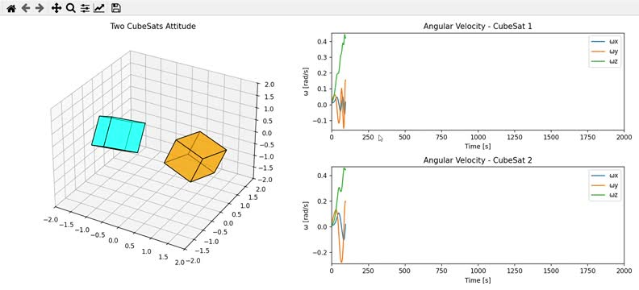

System Overview
The Ground Station Suite is an end-to-end software ecosystem designed for autonomous satellite tracking, real-time Digital Signal Processing (DSP), and robust telemetry decoding. Originally built to bridge the gap between expensive proprietary mission control software and fragmented open-source scripts, this suite provides a cohesive, production-grade platform.
By integrating direct SDR hardware interfacing (via SoapySDR) with a high-performance Python/C++ backend, the system achieves sub-millisecond latency for IQ data processing. The React-based frontend visualizes the RF spectrum, tracks satellite passes in real-time on a 3D globe, and logs all decoded telemetry into a persistent PostgreSQL database.

Advanced Capabilities
Beyond standard tracking, the Ground Station Suite supports scheduled automated observations. Operators can enqueue future satellite passes across multiple connected SDRs, and the system will autonomously wake up, steer the antennas, tune the radios, account for Doppler, record the IQ data in SigMF format, and process the telemetry stream — entirely hands-free.